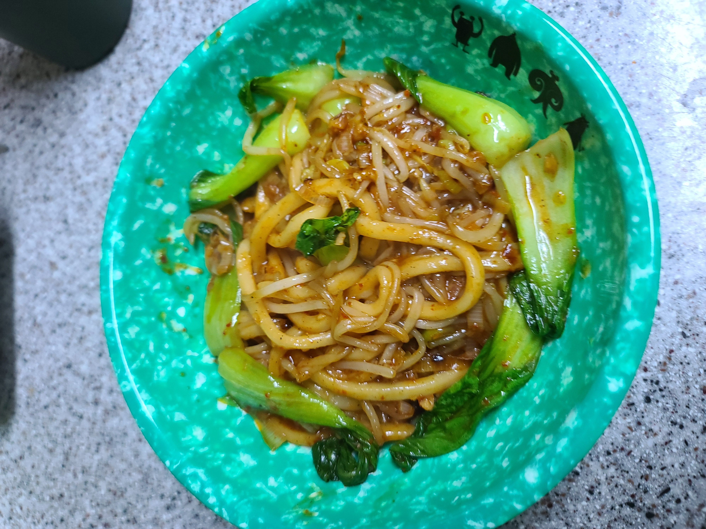

평소 집에서 면 요리를 먹는다고하면 간편하게 먹을수있는 라면이나 기성품우동 쉽게할수있는 오일 파스타 정도가 떠오를겁니다!
가끔씩 티비나 인터넷에서 보던 볶음면 요리를 집에서 할수있을까 ? 하고 의아해 할수있지만 이 레시피를 본다면 따라할수 있을겁니다!
시장이 반찬이다!!
예로부터 시장함이 반찬이다 라는 말이있습니다 .
배가 부른 상태라면 아무리 맛있는 음식을 먹더라도 만족도가 높지않을수있습니다.
우선 간식을 많이먹었다거나 이전 식사시간에 과하게 식사를하셨다면 소화가 어느정도 된다음 배가 고플때 이 레시피를 따라할 것을 추천드립니다.
재료준비(1인분)
숙주나물
청경채 2뿌리
대파 1뿌리
굴소스 2큰술
고춧가루 1큰술
다진마늘 2큰술
베트남고추
식용유
참기름
우동다시 / 국간장 1큰술
시판 우동면사리 1개
소금 1티스푼
설탕 1티스푼
후춧가루 1큰술
기호에따른 재료차이가 있을수있음
1. 소스만들기!

굴소스 2큰술
고춧가루 1큰술
우동다시 1큰술
식용유1큰술
설탕 1티스푼
후추가루 1큰술
참기름 1큰술 을 적당한 그릇에 넣은후 잘 섞이게 저어줍니다.
적당한 점도와 적갈색 정도의 색이 나오게 잘 섞였다면 소스는 완성입니다.
2.청경채와숙주나물
청경채와 숙주나물은 흐르는물에 깨끗하게 헹궈줘야합니다 .
청경채와 숙주나물 둘다 충분히 깨끗하게 헹구지 않는다면 흙냄새가 많이나고 청경채의경우 잎사귀 틈새틈새마다 있는 이물질이나 흙이 요리에 섞여들어갈수있으므로 매우 주의해야합니다.
3.조리
식용유 5큰술을 볶음우동을 만들 팬에 둘러줍니다 .
식용유를 둘러줬다면 불을 켜기전 대파와 다진마늘, 베트남 고추를 같이 넣어줍니다.
대파는 파기름을 내기위한 역할이기때문에 하얀부분만 송송 썰어 넣어줍니다. 남는 초록부분은 조금있다 면을 넣을때 같이넣어줍니다.
우동 사리면은 끓는물에 1분정도 데쳐주고 차가운 물에 담궈둡니다.
1분정도 파와 마늘 고추를 넣고 볶다가 파와 마늘이 볶아진 냄새가 나기시작하면 만들어둔 소스를 붓습니다
소스를 붓고 잘 휘저어 다진마늘과 파기름에 스며들게되면 면과 숙주나물 청경채를 넣습니다.
면이 눌러붙고 소스가 타지않도록 면에 소스가 잘 스며들도록 볶으며 계속 저어줍니다.
계속 가열하며 저어주다보면 소스색이 숙주나물과 면에 스며드는게 눈에 보일겁니다.
숙주나물과 청경채가 볶아지며 물이나와 간이 싱거워질수도있기때문에
숙주나물과 면 한가닥 정도 먹어보고 간이 부족하다 싶으면 소금을 조금씩 넣어 간을 맞춰줍니다.
사진에 보이는것처럼 먹음직스러운 붉은색이 면에 물들어있고 재료들을 충분히 볶아줬다면 끝입니다 .
시판하는 가벼운 재료들로 포장마차나 식당에 가야 먹을수있는 볶음우동을 스스로 만드셨습니다.
완성된 요리를 볼까요?
이렇게 두번째 레시피를 공유했고 여러분은 훌륭하게 따라해내셨을겁니다
이렇게 맛있게 생겼는데 맛이없을리 없습니다.
요리를 다 했다면 다먹고나서 설거지를 할 생각을 하며 맛나게 먹도록합시다 고생하셨습니다.
